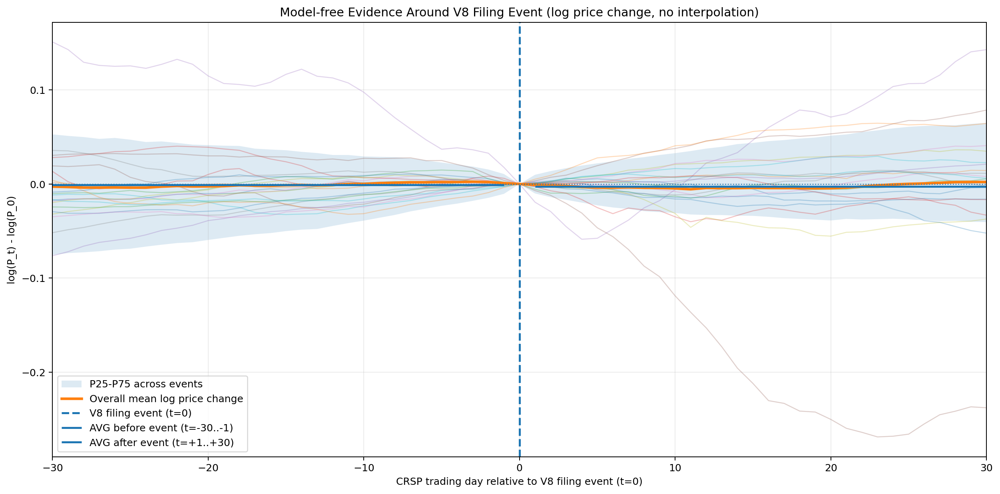
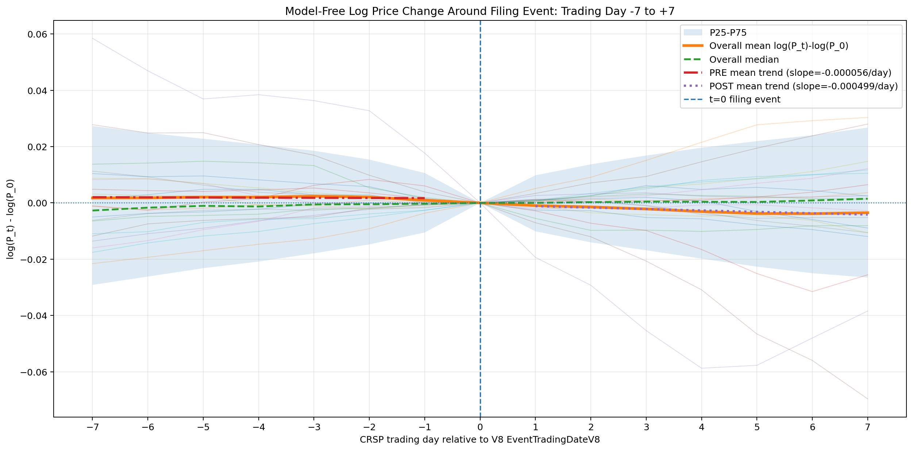

연구 변수 정의 및 실증분석 설계
분석단위: 연도-기업 단위 10-K report
1. Dependent variables
| Variable | Symbol | Measurement | Source |
|---|---|---|---|
| Abnormal Return | AR | ARᵢτ = DlyRetᵢτ − (α̂ᵢ + β̂ᵢ VWRETDτ) | Pan et al. (2018); Ertekin, Sorescu, & Houston (2018) |
| Cumulative Abnormal Return | CAR | CARᵢ,[a,b] = Σ ARᵢτ | Pan et al. (2018); Ertekin, Sorescu, & Houston (2018) |
| Buy-and-Hold Abnormal Return | BHAR | Π(1+Rᵢτ) − Π(1+RBenchmark,ᵢτ) | Ertekin, Sorescu, & Houston (2018) |
현재 V8의 primary market DVs는 AR 및 CAR이며, BHAR은 후속 분석 후보이다. CAR windows: [-1,+1], [-2,+2], [-3,+3], [-1,+2], [-2,0], [0,+2].
2. Focal independent variables — AI communication
| Variable | Symbol | Measurement | Source |
|---|---|---|---|
| AI Mention | AI_Mention | 10-K 또는 해당 section에 AI-related term이 하나 이상 존재하면 1, 아니면 0 | Mishra, Ewing, & Cooper (2022) |
| AI Focus | AI_Focus | (No. of AI-related words / Total no. of words) × 100 | Mishra, Ewing, & Cooper (2022) |
| AI disclosure start | StartAI | 연속 관측연도에서 AI_Mention: 0→1. Prior-year missing은 0으로 대체하지 않음 | 본 연구에서 구성 |
| AI disclosure stop | StopAI | 연속 관측연도에서 AI_Mention: 1→0. Model 1J의 reference는 NoChange(0→0, 1→1) | 본 연구에서 구성 |
AI_Mention과 AI_Focus는 실제 AI adoption이 아니라 text-based AI disclosure / communication proxy로 해석한다.
3. Focal independent variables — Concreteness
| Variable | Symbol | Measurement | Source |
|---|---|---|---|
| Overall Concreteness | Concreteness_All | 전체 10-K의 Brysbaert dictionary-matched words에 대해 ΣCw / Nmatched | Brysbaert, Warriner, & Kuperman (2014); Baek, Ihm, & Kang (2023) |
| AI-sentence Concreteness | Concreteness_AI | AI-related term이 하나 이상 포함된 모든 문장의 dictionary-matched word score 평균 | Brysbaert et al. (2014); Baek, Ihm, & Kang (2023) |
| Non-AI Concreteness | Concreteness_NonAI | AI-related term이 없는 문장의 dictionary-matched word score 평균 | Brysbaert et al. (2014); Baek, Ihm, & Kang (2023) |
| Concreteness Difference | Delta_Concreteness | Concreteness_AI − Concreteness_NonAI | Baek, Ihm, & Kang (2023) 기반 본 연구 구성 |
Concreteness_AI는 AI keyword 자체의 점수가 아니라 AI-related sentences 전체의 matched-word average다. AI_Mention=0이면 AI_Focus=0이지만 Concreteness_AI와 Delta_Concreteness는 구조적으로 NA이며 0으로 대체하지 않는다.
4. Focal independent variables — TENSE
| Scope | Variables | Measurement / construction | Source |
|---|---|---|---|
| Overall | PastFocus, PresentFocus, FutureFocus, TimeFocusing | 각 focus = 해당 marker / Total words ×100; TimeFocusing = PastFocus − (PresentFocus + FutureFocus) | Pan et al. (2018); Baek & Ihm (2021) |
| AI sentences | PastFocus_AI, PresentFocus_AI, FutureFocus_AI, TimeFocusing_AI | 122-term AI-related sentences에 동일 계산 적용 | Pan et al. (2018); Baek & Ihm (2021); Mishra, Ewing, & Cooper (2022) |
| Non-AI sentences | PastFocus_NonAI, PresentFocus_NonAI, FutureFocus_NonAI, TimeFocusing_NonAI | AI term이 없는 문장에 동일 계산 적용 | Pan et al. (2018); Baek & Ihm (2021); Mishra, Ewing, & Cooper (2022) |
| AI − Non-AI | Delta_PastFocus, Delta_PresentFocus, Delta_FutureFocus, Delta_TimeFocusing | 각 AI value − NonAI value | Pan et al. (2018); Baek & Ihm (2021) 기반 본 연구 구성 |
현재 구현: PastFocus = VBD, PresentFocus = VBP/VBZ, FutureFocus = AUX will/shall/'ll/’ll. AI/Non-AI partition은 Concreteness_AI와 동일한 122-term boundary-aware matcher를 사용한다. AI_Mention=0일 때 AI-sentence TENSE 및 Delta_*Focus는 회귀에서 missing으로 처리하며 0으로 해석하지 않는다. 같은 scope의 Past/Present/Future와 TimeFocusing은 정확한 선형결합 관계이므로 동일 specification에 기계적으로 동시 투입하지 않는다.
5. Baseline textual controls
| Variable | Symbol | Measurement | Source |
|---|---|---|---|
| Fog Index | FOG | 0.4 × (Average words per sentence + Percentage of complex words) | Loughran & McDonald (2014); Ertugrul et al. (2017) |
| 10-K File Size | FileSize | SEC 10-K filing file size; 현재 회귀 실행에서는 ln(FileSize) 사용 | Loughran & McDonald (2014); Ertugrul et al. (2017) |
| Word Count | WordCount | Total words in 10-K; 현재 회귀 실행에서는 ln(TotalWords) 사용 | Baek, Ihm, & Kang (2023) |
| Positive Tone | PositiveTone | LM positive words / total words ×100 | Loughran & McDonald (2011); Pan et al. (2018) |
| Negative Tone | NegativeTone | LM negative words / total words ×100 | Loughran & McDonald (2011); Pan et al. (2018) |
6. Baseline firm-level controls
| Variable | Symbol | Measurement | Source |
|---|---|---|---|
| Firm Size | SIZE | ln(Total Assets) | Mushtaq et al. (2022) |
| Cash Holdings | CASH | Cash & Equivalents / Total Assets | Mushtaq et al. (2022) |
| Leverage | LEV | Total Debt / Total Assets | Mushtaq et al. (2022) |
현재 실제 회귀 사양에서 사용된 firm-level controls는 SIZE, CASH, LEV이다.
7. Candidate controls
| Variable | Symbol | Measurement | Source |
|---|---|---|---|
| Liquidity | LIQ | Current Assets / Current Liabilities | Mushtaq et al. (2022) |
| Financing Needs / Deficit | DEF | Dividend + Capital Expenditure + Change in Net Working Capital + Short-Term Debt + Current Portion of Long-Term Debt − Net Cash Flow | Mushtaq et al. (2022) |
| Research & Development | RD | R&D Expenses / Total Assets | Mushtaq et al. (2022) |
| Tangibility | TANG | Net PPE / Total Assets | Mushtaq et al. (2022) |
| Return on Assets | ROA | Income before extraordinary items / lagged total assets | Ertugrul et al. (2017); Pan et al. (2018) |
| Profitability | PROFITABILITY | EBITDA / Total Assets | Ertugrul et al. (2017) |
| Market-to-Book | MB | Market value of equity / Book value of equity | Ertugrul et al. (2017) |
| Turnover Change | DTURN | Change in average monthly share turnover | Ertugrul et al. (2017) |
| Return Volatility | SIGMA | Standard deviation of firm-specific weekly returns | Ertugrul et al. (2017) |
| Prior Return | RET | Mean firm-specific weekly returns | Ertugrul et al. (2017) |
| Expected Default Frequency | EDF | Expected Default Frequency | Ertugrul et al. (2017) |
| Firm Age | FirmAge | ln(years since first CRSP appearance) | Ertugrul et al. (2017) |
| Business Segment Index | BSEG | Sum of squared business-segment proportions | Ertugrul et al. (2017) |
| Reporting Opacity | OPAQUE | Absolute discretionary accruals using modified Jones model | Ertugrul et al. (2017) |
8. Fixed Effects and additional selection check
| Variable / effect | Symbol | Measurement | Source |
|---|---|---|---|
| Firm Fixed Effects | αᵢ | Firm-specific fixed effect | 본 연구의 baseline specification |
| Year Fixed Effects | δₜ | Year dummies | 본 연구의 baseline specification |
| Inverse Mills Ratio | IMR_hat | Probit first stage의 φ(Ẑᵢₜ)/Φ(Ẑᵢₜ) | Ertekin, Sorescu, & Houston (2018); Moon, Tuli, & Mukherjee (2023) |
기본 회귀식
모든 핵심 모형은 text controls, event-aligned t−1 firm controls, Firm FE(αᵢ), Year FE(δₜ)를 포함한다. 추정은 statsmodels.api.OLS(...).fit(), 기본 covariance는 nonrobust이다.
Model 1G · 전체 AI 존재
Model 1H · Section AI intensity
Model 1I · 변화/최초 언급
Model 1J · Start / Stop decomposition
Model 1K · Start/Stop × AI_Focus
Model 1L · Section transition × language
M은 Concreteness_AI, FutureFocus_AI, PastFocus_AI를 각각 별도 추정. Stop은 1→0과 Stay1(1→1)을 비교하고 moderator는 t−1 사용.
표본 및 기술통계
11,050
10,656
10,135
9,082
521
288
| Variable | N | Mean | SD | Median |
|---|---|---|---|---|
| AI_Mention | 10,135 | 0.6111 | 0.4875 | 1 |
| AI_Focus (%) | 10,135 | 0.00716 | 0.01661 | 0.00205 |
| Concreteness_All | 10,135 | 2.9486 | 0.0608 | 2.9430 |
| Concreteness_AI | 6,192 | 3.0069 | 0.2869 | 2.9946 |
| PastFocus_AI (%) | 6,193 | 0.7242 | 1.3144 | 0 |
| FutureFocus_AI (%) | 6,193 | 0.1266 | 0.4808 | 0 |
| FOG | 10,135 | 22.4208 | 1.1184 | 22.4322 |
| LEV | 9,531 | 0.2857 | 0.2008 | 0.2658 |
| SIZE | 9,559 | 9.8321 | 1.3702 | 9.7118 |
| CASH | 9,559 | 0.1247 | 0.1326 | 0.0768 |
상관계수 및 VIF
Model 1J complete-case Pearson correlation N=8,966. 가장 큰 절대 상관은 ln(FileSize)–ln(TotalWords) r=0.7109이다. StartAI–StopAI는 r=-0.0447이다.
| Regressor | Model 1J VIF range |
|---|---|
| ln(TotalWords) | 2.294–2.297 |
| ln(FileSize) | 2.165 |
| SIZE | 1.218 |
| FOG | 1.190 |
| CASH | 1.176 |
| StartAI | 1.005 |
| StopAI | 1.004 |
Filing event 전후 가격경로
Figure 3 · -30 to +30

10,020
9,976
9,917
Pre daily overall mean 평균: -0.0010603 · Post: -0.0025580 · Post−Pre: -0.0014977 log point (단순 환산 약 -0.150%).
Colab STEP V8-5P에서 생성된 원본 Figure. 연도별 평균 경로, 전체 P25-P75, 전체 평균, t=0, 사전·사후 평균선을 포함한다.
Figure 4 · -7 to +7

10,020
9,962
-0.004534
Pre 평균 0.0018613 · Post 평균 -0.0026723 · 단순 환산 약 -0.452%.
Colab STEP V8-5Q에서 생성된 원본 Figure. 연도별 경로, P25-P75, 전체 평균·중앙값, t=0, 사전·사후 평균선을 포함한다. 이 -0.452%는 Model 1J StartAI 회귀계수가 아니다.
메일 1번을 설명하는 단일 OLS 결과표
| OLS Regression Results — Model 1J Overall Start / Stop, CAR[-2,0] | ||||||
|---|---|---|---|---|---|---|
| Variable | coef | std err | t | P>|t| | [0.025 | 0.975] |
| StartAI (0→1) | -0.004533 | 0.001772 | -2.558 | 0.0105 | -0.008 | -0.001 |
| StopAI (1→0) | -0.000616 | 0.002395 | -0.257 | 0.797 | -0.005 | 0.004 |
| FOG | -0.000025 | 0.001 | -0.029 | 0.977 | -0.002 | 0.002 |
| ln(FileSize) | -0.0008 | 0.001 | -0.619 | 0.536 | -0.004 | 0.002 |
| ln(TotalWords) | -0.000072 | 0.002 | -0.031 | 0.975 | -0.005 | 0.004 |
| PositiveTone | -0.0017 | 0.006 | -0.276 | 0.782 | -0.013 | 0.010 |
| NegativeTone | 0.0002 | 0.002 | 0.075 | 0.941 | -0.004 | 0.004 |
| LEV | -0.0026 | 0.005 | -0.575 | 0.565 | -0.012 | 0.006 |
| SIZE | -0.0038 | 0.001 | -2.764 | 0.006 | -0.006 | -0.001 |
| CASH | -0.0034 | 0.007 | -0.482 | 0.630 | -0.017 | 0.011 |
| Observations | 8,886 | R² | 0.132 | Adj. R² | 0.036 | |
| Firm FE / Year FE | Included / Included | Covariance | nonrobust | Reference | NoChange | |
Firm/Year dummy coefficients는 실제 추정에는 포함되지만 가독성을 위해 표에서만 생략. 계수 -0.004533은 약 -0.453 percentage points.
교수님께 보고한 세 가지 결과의 상세 근거
이 절의 목적은 새로운 결과를 추가하는 것이 아니라, 메일의 각 문장이 어떤 변수·표본·모형·회귀결과에서 나온 것인지 설명하는 것이다.
전체 10-K · StartAI
Model 1J에서 StartAI와 StopAI를 동시에 포함한다. StartAI는 6개 CAR window에서 모두 음(-)이며, [-1,+1] β=-0.004578(p=.0127), [-2,+2] β=-0.004866(p=.0276), [-1,+2] β=-0.004451(p=.0287), [-2,0] β=-0.004533(p=.0105)이다. 대표적으로 [-2,0]에서는 NoChange보다 약 -0.453%p 낮다. 전체 StopAI는 유의하지 않다.
Section별 Start / Stop
Item 1A. Model 1J StartAI는 CAR[-2,0] β=-0.003090(p=.0916), CAR[-1,+2] β=-0.003467(p=.0998). Model 1I First_AI_Mention에서는 CAR[-2,0] β=-0.003935(p=.0431), CAR[-1,+2] β=-0.004391(p=.0497)였다.
Item 7. StopAI는 CAR[-1,+1] β=-0.004634(p=.0481), CAR[-1,+2] β=-0.005125(p=.0467), CAR[0,+2] β=-0.004086(p=.0572). Item 7 StartAI는 뚜렷하지 않았다.
Item 1A와 Item 1 · transition × language
Item 1A. Model 1L의 interaction 중 p<.05인 결과는 없었다. 가장 가까운 값은 StartAI×FutureFocus_AI의 CAR[-2,0] β≈-0.006575(p=.0940)이다. 일부 Start-group simple slope가 nominally significant하더라도 interaction 자체의 유의성을 의미하지 않는다.
Item 1. Stop 모형은 1→0을 Stay1(1→1)과 비교하며 moderator는 t−1 값을 사용한다. AI-specific 언어변수는 AI가 없는 해에 0으로 채우지 않는다.
Stop×Concreteness_AI(t−1): [-2,+2] β=-0.03605(p=.0353), [-3,+3] β=-0.05524(p=.0062), [-1,+2] β=-0.03095(p=.0488), [-2,0] β=-0.03310(p=.0212); 6개 window 모두 음(-).
Stop×PastFocus_AI(t−1): [-1,+2] β≈-0.00601(p=.0308), [0,+2] β≈-0.00527(p=.0169). FutureFocus interaction은 전반적으로 뚜렷하지 않았다.